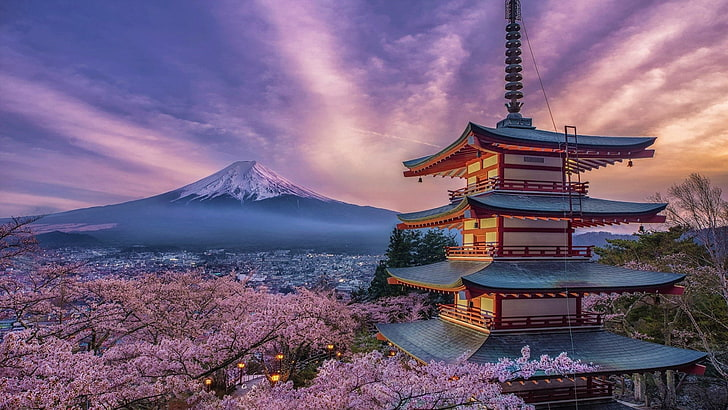

From off-the-beaten-path adventures to insider tips on popular destinations, we're your go-to source for wanderlust inspiration.
Welcome to Trekker's Tales! I'm Soumya, a software engineer and I'm here to show you a world of possibilities. Immerse yourself in vibrant cultures, savor culinary delights, and uncover hidden gems off the beaten path. Whether you're a seasoned globetrotter or a first-time traveler, our blog is your passport to inspiration, adventure, and unforgettable experiences. Get ready to explore, dream, and wander with us as we share our tales, tips, and insights from around the globe, from bustling cityscapes to remote wilderness. So get ready to embark on a virtual odyssey that will inspire your next great escape and reignite your passion for exploration.
Blog 1:
The vibrance beauty of Italy, Europe
With its awe-inspiring art, architecture and culinary delights, Italy has been a star of the world stage for millennia. The epicenter of the Roman Empire and the birthplace of the Renaissance, this European virtuoso practically groans under the weight of its cultural cachet. The challenge for any visit to Italy is not so much where to go – an amazing experience is honestly assured wherever you end up – but rather how to go about it.
Here's our guide on how to enjoy Italy to it's fullest -
Memorable things to do in Italy
Tour Rome, the epicenter of empire
Visit the city of canals, Venice
Soak up the timeless beauty of Sicily
Enjoy the bustling excitement of Naple's Street life
Hit the ski slopes and hiking trails in Valle d'Aosta
Learning some basic Italian might help a lot in your journey. The locals will treat you better and appreciate your efforts, no matter how basic your Italian is.
Blog 2:
A place where ancient traditions fuse with modern life Japan, Asia
Japan is truly timeless, it sparks all the senses, from its temple bells, capsule hotels and breezy cat islands to outdoor sculptures, pine-forest hot springs and umami flavors in world-class dining. With its myriad islands, towering mountains and megacities, Japan can be a daunting destination to get around. We've got everything you need to know.

The downside of having so many incredible attractions in one country is feeling overwhelmed by the options – where to even begin? Don't worry – we're here to help with a round-up of the best things to do in land of the rising sun, both celebrated and under the radar.
Memorable things to do in Japan
Devour authentic japanese food alongside locals
Chase cherry blossoms and festivals
Time jump to ancient Japan in Kyoto
Embrace winter skiing and ice sculptures in Hokkaido
Dissolve away your stress in Onsen hot springs
Zip across Japan on a bullet train
Japan has a reputation as an etiquette-bound place that can be intimidating for first-time visitors. Booking accomodations at advance and arriving at the right can help you a lot. Top accommodations can book up weeks or even months in advance, so it's best to plan ahead.
Particularly busy travel periods include the first week of January, cherry blossom season (late March through April, depending on the destination), “Golden Week” (April 29 to May 5) and August.
Blog 3:
The land of the midnight sun Norway, Europe
The essence of Norway's appeal is remarkably simple: this is one of the most beautiful countries on earth. Norway is renowned for its natural beauty, with its legion of fjords, glaciers and mountains demanding the attention of visitors. But, if you can pull your gaze away from the awe-inspiring landscape for just a few brief moments, you’ll also discover cutting-edge cultural venues, historic architecture and a quietly confident restaurant scene – characteristics that often fly under the radar when it comes to discussing Norway’s charms.
From cruising the fjords and wild camping to cities full of culture and incredible food, here are some of my top things to do on a visit to Norway.
Memorable things to do in Norway
Gaze at sheer cliffs as you sail down the fjords
Tour the Lofoten Islands
Tread the boards at Bryggen
Catch the rays of the midnight sun
Chase the northern lights
Embark on a scenic railway journey
Norway is a wonderful country to experience as a first-time visitor – an efficient and extensive transport network, incredible attractions, breathtaking scenery and relaxed locals all add up to the trip of a lifetime.
About me
Hi there, My name is Soumya and I created this blog to share my passion for travel and adventure.
Our lives are time-starved and technology-driven and, let’s be honest, it’s not often that we actually take the necessary time to de-stress and truly switch off. Travel allows us to escape life’s daily demands, dramas and deadlines and enables us to clear our minds. It constantly challenges us, not only to adapt to and explore new surroundings, but also to engage with different people, to embrace adventures as they come and to share new and meaningful experiences with friends and loved ones.
This blog allows me to connect with like-minded travelers while documenting my own journey around the globe. I hope my photos, tips and experiences will inspire you to explore new places and create memorable experiences. Thanks for joining me!